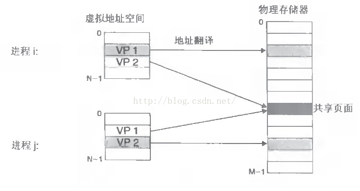
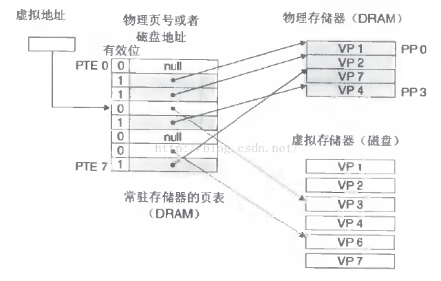

Linux进程的虚拟内存
一月 31, 2021
当我们创建一个进程时，我们知道进程有以下特点：
- 每个进程都有自己独立的4G虚拟内存空间，各个进程的内存空间具有类似的结构
- 一个新进程建立的时候，将会建立起自己的内存空间，此进程的数据，代码等从磁盘拷贝到自己的进程空间，哪些数据在哪里，都由进程控制表中的task_struct记录，task_struct中记录中一条链表，记录中内存空间的分配情况，哪些地址有数据，哪些地址无数据，哪些可读，哪些可写，都可以通过这个链表记录
- 每个进程已经分配的内存空间，都与对应的磁盘空间映射
那么问题来了：
- 计算机明明没有那么多内存（n个进程的话就需要n*4G）内存
- 建立一个进程，就要把磁盘上的程序文件拷贝到进程对应的内存中去，对于一个程序对应的多个进程这种情况，浪费内存！
所以，实际上：
- 每个进程的4G内存空间只是虚拟内存空间，每次访问内存空间的某个地址，都需要把地址翻译为实际物理内存地址
- 所有进程共享同一物理内存，每个进程只把自己目前需要的虚拟内存空间映射并存储到物理内存上。
- 进程要知道哪些内存地址上的数据在物理内存上，哪些不在，还有在物理内存上的哪里，需要用页表来记录
- 页表的每一个表项分两部分，第一部分记录此页是否在物理内存上，第二部分记录物理内存页的地址（如果在的话）
- 当进程访问某个虚拟地址，去看页表，如果发现对应的数据不在物理内存中，则缺页异常
- 缺页异常的处理过程，就是把进程需要的数据从磁盘上拷贝到物理内存中，如果内存已经满了，没有空地方了，那就找一个页覆盖，当然如果被覆盖的页曾经被修改过，需要将此页写回磁盘
进程的虚拟内存地址与实际物理内存映射理解图如下：

页表工作原理及映射关系理解图如下：

可以认为虚拟空间都被映射到了磁盘空间中，并且由页表记录映射位置，当访问到某个地址的时候，通过页表中的有效位，可以得知此数据是否在内存中，如果不是，则通过缺页异常，将磁盘对应的数据拷贝到内存中，如果没有空闲内存，则选择牺牲页面，替换其他页面。
事实上，在每个进程创建加载时，内核只是为进程“创建”了虚拟内存的布局，具体就是初始化进程控制表中内存相关的链表，实际上并不立即就把虚拟内存对应位置的程序数据和代码（比如.text .data段）拷贝到物理内存中，只是建立好虚拟内存和磁盘文件之间的映射就好（叫做存储器映射），等到运行到对应的程序时，才会通过缺页异常，来拷贝数据。还有进程运行过程中，要动态分配内存，比如malloc时，也只是分配了虚拟内存，即为这块虚拟内存对应的页表项做相应设置，当进程真正访问到此数据时，才引发缺页异常。
应用虚拟内存机制有很多优点：
- 既然每个进程的内存空间都是一致而且固定的，所以链接器在链接可执行文件时，可以设定内存地址，而不用去管这些数据最终实际的内存地址，这是有独立内存空间的好处
- 当不同的进程使用同样的代码时，比如库文件中的代码，物理内存中可以只存储一份这样的代码，不同的进程只需要把自己的虚拟内存映射过去就可以了，节省内存
- 在程序需要分配连续的内存空间的时候，只需要在虚拟内存空间分配连续空间，而不需要实际物理内存的连续空间，可以利用碎片
查看评论